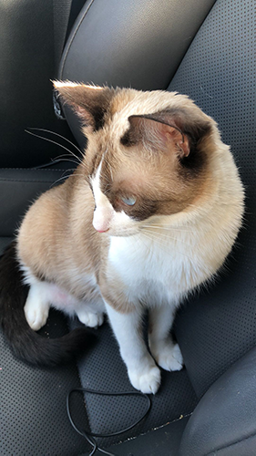

Best Practices for Form Desgin
I realized something interesting about forms from the article, users dislike forms. Overall, the designer has to accommodate for the laziest users, making the form as easy and fast as possible in order to get them to fill it out. So many specifications and rules exist in order to successfully make a form simple for the user. I noticed how many different ways there are to fill out forms: from dropdown menus, numbers, and checkboxes. Everything is in effort to not overwhelm the user and to have the easiest possible process. There are almost too many ways to go wrong, as there are specific combinations that work.
Source
Best Practices for Modals/ Overlays/ Dialog Windows
Modals seem like an interesting solution to prompt the user to fill out a form. Although, based on this article it sounds like users hate modals and wish to close them immediately. This offers the interesting question of how to get users to interact or fill out a form if they hate modals and hate forms. It seems like it is a matter of designing the perfect and correct modal to intrigue and keep the user filling it out. For the design of the Mad Lib, modal usage is an adequate solution, although designing it to look more a part of the webpage, might make it less of an effort to fill out. The article didn’t mention the aesthetics of a modal and it seems like many modals block the webpage. I think it might be interesting to see if I can make a modal that is more or just as intriguing as the webpage, to get the user to want to fill it out.
Source
10 Intriguing Photographs to Teach Close Reading and Visual Thinking Skills
I think this was an important article to read, going forward with studio 2 especially. I thought it was interesting how they laid out the multitudes of ways to engage people with images, to make them look deeper into the meaning and context of an image. I think it’s critical to include these methods as a means to create a captivating piece, as well as a source of educating the user. A stand alone image may be interesting on it’s own, but by integrating these methods into studio 2, the image can become even more engaging. The tools can be applied to non-images I think as well, to other design elements to help keep the user engages to the website as well as to the image.
The website I visited was by far one of the best websites I have been to. They used cards in order to represent images and held on to that extended metaphor throughout the whole website. Additionally, it felt like an engaging website because it wasn’t so static and felt closer to a game or real life.
Source
Website
wk 6 - Studio 2f - Every Picture - Visual Thinking Analysis - Part One
Kendra Cleary, 2021
This image is interesting because of how unique the piece is. I originally found the gold frog at a flea market and instantly knew I needed the piece for my room. I have never really seen any objects like this and thought it to be so strange, yet the gold coloring makes it seem like quite a normal piece. The necklace he is wearing is a bracelet my friend made for me, and I thought that it was so polar to the frog, that putting it on him would be a really cool clash. I think what also makes this image interesting is the hand holding it, it gives the image a human touch.The image relates to the collection because it is an object from my room. Additionally, it has a cool backstory and holds meaning that will be explained in the studio. The collection tells a story about me, because of how much I present myself in the decoration of my room. I use decorate as a way to materialistically show who I am through particular objects and aesthetics.
wk 6 - Studio 2f - Every Picture - Visual Thinking Analysis - Part Two

Richard Huang, 2021
This image is about a cat, for the cat is the subject of the image. It may also be about travel or uncertainty, because the cat is in a car, particularly in the passenger seat, therefore it doesn’t know where it is going.The most interesting aspect of the image is that the cat is not looking directly at the camera, there is a disconnect between the viewer and the cat. It adds a layer of uncertainty to the image. The most obvious aspect of the image is what is contained in the image, we see a cat, in a car, looking away. Although, the most mysterious aspect is just that, where is the car going and what is the cat looking at are both questions I find myself asking.
Game Design UX Best Practices
This article was very helpful in presenting the underlying details of games and what kind of UI/UX design goes into games for the most effective performance. The use of sliders, pop ups, user choices, draggable objects, intro video and dialog boxes will all prove to be very useful going into studio 3 for the game. Although, I think this article focused more on mobile games and their usage more towards gaining income, like the rate us and rewarded videos. Some items I don’t think I will use for studio 3, but many of the items will be interesting to try to use for the game.
Source